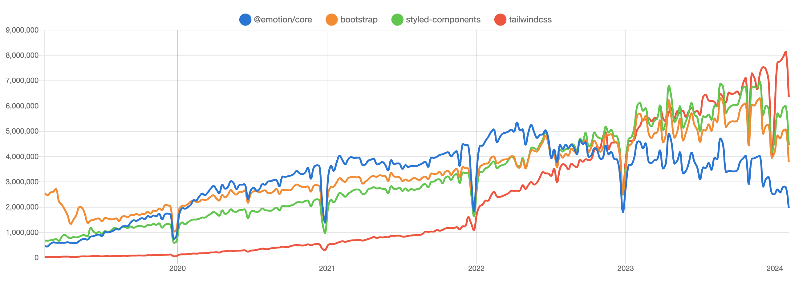

CSS Module, CSS-in-JS, CSS Framework 비교 및 선택
2024. 2. 14.
CSS
INDEX
0. npm trends 비교

1. CSS 모듈
CSS 모듈은 CSS 클래스 이름이 고유하게 되도록 파일 단위로 스타일을 캡슐화하는 방식입니다. 로컬 스코핑(local scoping)을 통해 다른 CSS 파일의 클래스 이름과 충돌하지 않습니다. 주로 React, Vue 같은 컴포넌트 기반 프레임워크에서 사용됩니다.
/* Button.module.css */
.button {
background-color: blue;
color: white;
padding: 10px 20px;
border: none;
border-radius: 5px;
cursor: pointer;
}
// Button.jsx
import styles from './Button.module.css';
function Button({ children }) {
return (<button className={styles.button}>{children}</button>)
}
export default Button;
스타일 충돌 방지
클래스 이름이 고유하게 변환되어, 다른 스타일과 충돌할 위험이 줄어듭니다. 재사용성: 컴포넌트 별로 스타일을 정의하여 재사용하기 쉽습니다. 유지 관리: 스타일이 컴포넌트에 국한되어 있어 유지 관리가 용이합니다.
2. CSS-in-JS
자바스크립트를 사용하여 스타일을 직접 작성하고, 컴포넌트에 스타일을 적용하는 방식입니다. Styled-components, Emotion 같은 라이브러리가 대표적입니다. 런타임에 스타일이 적용되며, 동적 스타일링이 가능합니다.
import styled from 'styled-components';
const Button = styled.button`
background-color: blue;
color: white;
padding: 10px 20px;
border: none;
border-radius: 5px;
cursor: pointer;
&:hover {
background-color: darkblue;
}
`;
function App() {
return (<Button>Click Me</Button>)
}
export default App;
동적 스타일링
상태나 속성에 따라 스타일을 쉽게 변경할 수 있습니다.
스타일 캡슐화
컴포넌트 단위로 스타일이 적용되어, 충돌을 방지합니다.
의존성 감소
CSS 파일을 따로 관리할 필요 없이, 자바스크립트 파일 내에서 관리됩니다.
3. CSS 프레임워크
사전에 정의된 스타일 클래스를 제공하여, 빠르게 웹 인터페이스를 디자인할 수 있게 돕는 도구입니다. 유틸리티-퍼스트 방식의 Tailwind CSS가 대표적입니다.
import styled from 'styled-components';
function App() {
return (
<button class="bg-blue-500 hover:bg-blue-700 text-white font-bold py-2 px-4 rounded">
Click Me
</button>
)
}
export default App;
빠른 개발
사전에 정의된 스타일을 사용하여 빠르게 인터페이스를 구성할 수 있습니다.
일관성
디자인 시스템 내에서 일관된 스타일링을 유지할 수 있습니다.
사용 용이성
복잡한 CSS를 직접 작성하지 않고도 다양한 디자인을 구현할 수 있습니다.
4. 언제 어떤 것을 사용해야 할까요?
1. 개발 속도와 생산성이 중요한 경우
CSS 프레임워크 > CSS 모듈 > CSS-in-JS
CSS 프레임워크는 사전에 정의된 스타일과 유틸리티 클래스를 통해 CSS를 작성하는 시간을 대폭 줄일 수 있습니다. 따라서, 빠른 프로토타이핑과 생산성 향상에 유리합니다.
2. 유지 관리와 확장성이 중요한 대규모 프로젝트
CSS-in-JS > CSS 모듈 > CSS 프레임워크
CSS-in-JS는 스타일을 컴포넌트 단위로 캡슐화하고, 조건부 스타일링 등 복잡한 로직을 쉽게 구현할 수 있어 대규모 프로젝트의 유지 관리와 확장성에 유리합니다. CSS 모듈도 유사한 이점을 제공하지만, CSS-in-JS만큼의 유연성은 제공하지 않습니다. CSS 프레임워크는 초기 개발 속도는 빠를 수 있으나, 대규모 프로젝트에서의 맞춤화와 확장성 측면에서 제약이 있을 수 있습니다.
3. 동적 스타일링이 필요한 경우
CSS-in-JS > CSS 모듈 > CSS 프레임워크
CSS-in-JS는 자바스크립트를 이용한 동적 스타일링을 자연스럽게 지원하여, 상태나 속성에 따른 스타일 변화를 쉽게 구현할 수 있습니다. CSS 모듈은 CSS 변수나 자바스크립트와의 결합을 통해 비슷한 기능을 구현할 수 있으나, CSS-in-JS만큼 직관적이지 않습니다. CSS 프레임워크는 동적 스타일링을 위해 추가적인 자바스크립트 로직이 필요할 수 있습니다.
4. 커스텀 디자인과 고유한 브랜딩이 중요한 경우
CSS-in-JS = CSS 모듈 > CSS 프레임워크
CSS-in-JS와 CSS 모듈은 고유한 디자인을 자유롭게 구현할 수 있게 해주며, 특히 CSS-in-JS는 동적으로 스타일을 조정할 수 있는 능력이 뛰어납니다. 반면, CSS 프레임워크는 유틸리티 클래스를 통한 디자인 제공으로, 고유한 브랜딩과 맞춤 디자인 구현에 제약이 있을 수 있습니다.
5. 왜 CSS 프레임워크의 인기가 많아졌을까요?
CSS-in-JS의 한계
1. 성능
런타임 오버헤드
CSS-in-JS 라이브러리는 JavaScript를 통해 스타일을 동적으로 생성하고 적용합니다. 이 과정은 런타임에 발생하는 오버헤드를 초래하며, 특히 DOM 업데이트가 빈번한 애플리케이션에서 성능 저하를 일으킬 수 있습니다.
번들 크기 증가
CSS-in-JS 라이브러리를 프로젝트에 추가하면 최종 번들의 크기가 커질 수 있습니다. 사용하는 라이브러리의 크기와 방식에 따라 달라지지만, 이는 초기 로딩 시간에 영향을 줄 수 있습니다.
2. 서버 사이드 렌더링(SSR) 복잡성
SSR과의 호환성
CSS-in-JS는 서버 사이드 렌더링 환경에서 추가적인 설정이나 고려사항을 요구할 수 있습니다. 스타일이 JavaScript와 밀접하게 연결되어 있기 때문에, 서버에서 HTML과 함께 초기 스타일을 적절히 로드하고 전달하는 과정이 복잡해질 수 있습니다.
3. 도구 및 라이브러리 의존성
라이브러리 의존성
특정 CSS-in-JS 라이브러리에 대한 의존성이 생깁니다. 프로젝트에서 다른 라이브러리로 전환하거나, 라이브러리가 더 이상 지원되지 않을 경우, 이전이 어려울 수 있습니다.
4. 접근성 및 검색 엔진 최적화(SEO)
스타일 로딩 지연
JavaScript를 통해 스타일이 적용되기 때문에, 스타일 로딩이 지연될 수 있으며 이는 특히 검색 엔진 봇이 페이지를 크롤링할 때 문제가 될 수 있습니다. 이는 접근성과 SEO에 부정적인 영향을 줄 수 있습니다.